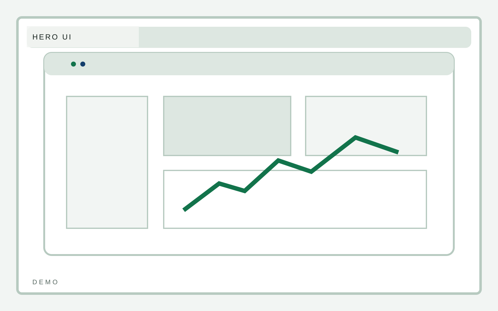

Activation
Fast team rollout
B2B software
A software marketing template that puts product UI, workflow clarity, and proof structure ahead of the usual startup chrome. The request path should feel inside the product system.

B2B software
The request flow should tell the user what kind of demo experience they are entering.
B2B software
Expectations should set tone and reduce ambiguity about pace, scope, and next steps.